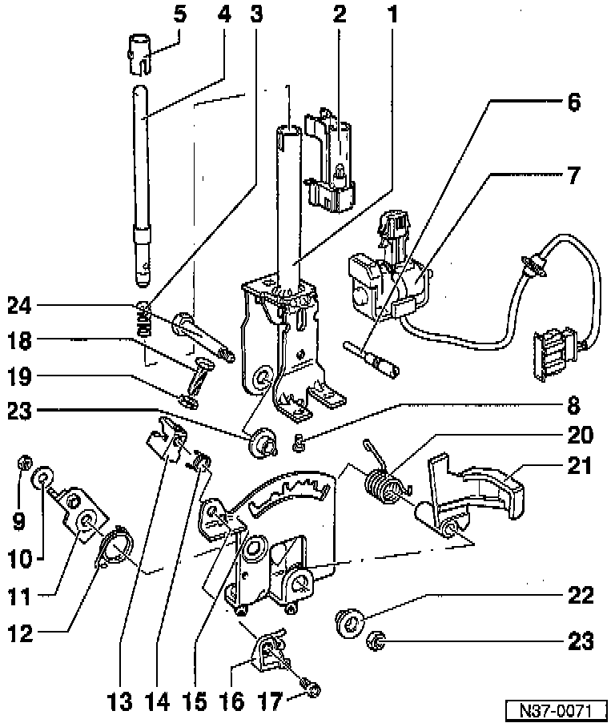

Shifter A/T: Diagrams

LEGEND
1 Selector lever
2 Indicator lighting
3 Spring
4 Pressure rod
5 Guide sleeve
6 Set screw
7 Shift Lock Solenoid
8 Screw
9 Nut
10 Washer
11 Locking lever For ignition key removal lock
12 Spring
13 Retainer For locking cable
14 Spring
15 Detent plate
16 Locking pin
17 Hex socket-head screw,
18 Screw
19 Washer
20 Spring
21 Lever
22 Bushing
23 Nut
24 Bolt